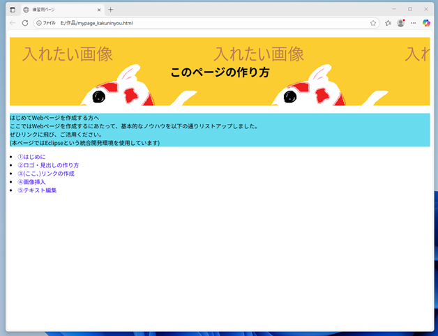
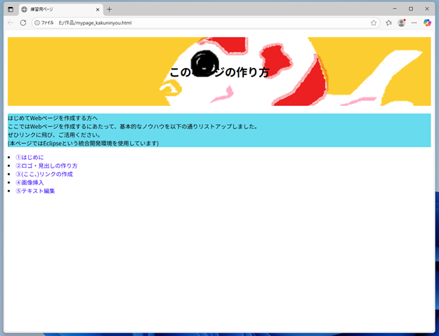
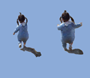
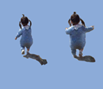

画像の挿入には<img>タグを使います。
<a>タグと同様、相対パスや絶対パスを使用します。
構文としては、『<img src="画像ファイルの場所" alt="画像の説明文">』です。
画像ファイルの場所には、相対パスや絶対パスを記述します。画像の説明文はあった方が良いですが、説明不要の場合でも""は付けましょう。
※絶対パスとは、｢https://｣もしくは｢http://｣から始まるURLです。
今回は練習で、ホームのページにサンプル画像を挿入してみましょう！
現在、<index.html>は以下の様になっていると思います。
1 <!DOCTYPE html>
2 <html>
3 <head>
4 <meta charset="UTF-8">
5 <title>あなたが付けたタイトル</title>
6 </head>
7 <body>
8 <header>
9 <h1>このページの作り方</h1>
10 </header>
11
12 <main>
13 <p>はじめてWebページを作成する方へ<br>
14 ここではWebページを作成するにあたって、基本的なノウハウを以下の通りリストアップしました。<br>
15 ぜひリンクに飛び、ご活用ください。<br>
16 (本ページではEclipseという統合開発環境を使用しています)
17 </p>
18
19 <nav>
20 <lu>
21 <li><a href="first.html">①はじめに</a></li>
22 <li><a href="logo.html">②ロゴ・見出しの作り方</a></li>
23 <li><a href="link.html">③(ここ、)リンクの作成</a></li>
24 <li><a href="img.html">④画像挿入</a></li>
25 <li><a href="text.html">⑤テキスト編集</a></li>
26 </lu>
27 </nav>
28 </main>
29
30 <footer>
31
32 </footer>
33
34 </body>
35 </html>
この、リストの下に、<img src="images/sample.png" alt="画像サンプル">と付け加えてみました！
この場合、相対パスにて『index.html』と同じ場所に作成されたimagesフォルダのsample.pngと言う名前の画像を("画像サンプル"と説明文を付けて)挿入したことになります。
1 <!DOCTYPE html>
2 <html>
3 <head>
4 <meta charset="UTF-8">
5 <title>あなたが付けたタイトル</title>
6 </head>
7 <body>
8 <header>
9 <h1>このページの作り方</h1>
10 </header>
11
12 <main>
13 <p>はじめてWebページを作成する方へ<br>
14 ここではWebページを作成するにあたって、基本的なノウハウを以下の通りリストアップしました。<br>
15 ぜひリンクに飛び、ご活用ください。<br>
16 (本ページではEclipseという統合開発環境を使用しています)
17 </p>
18
19 <nav>
20 <lu>
21 <li><a href="first.html">①はじめに</a></li>
22 <li><a href="logo.html">②ロゴ・見出しの作り方</a></li>
23 <li><a href="link.html">③(ここ、)リンクの作成</a></li>
24 <li><a href="img.html">④画像挿入</a></li>
25 <li><a href="text.html">⑤テキスト編集</a></li>
26 </lu>
27 </nav>
28
29 <img src="images/sample.png" alt="サンプル画像">
30 </main>
31
32 <footer>
33
34 </footer>
35
36 </body>
37 </html>
すると、ホームのページにサンプル画像が追加されました。
いよいよ次項、⑤テキスト編集では、ここまでの見出し・段落・リンク・画面の設定を行います。
おまけ
ちなみに画像挿入ですが、このようにコンテンツの背景としても挿入可能です↓


詳細は⑤テキスト編集にて
おまけ-2
また、本ページを3秒以上ご覧いただいた方には、動く画像（アニメーション画像）が現れましたね。
この詳細についても、⑤テキスト編集にて触れたいと思います。

 
